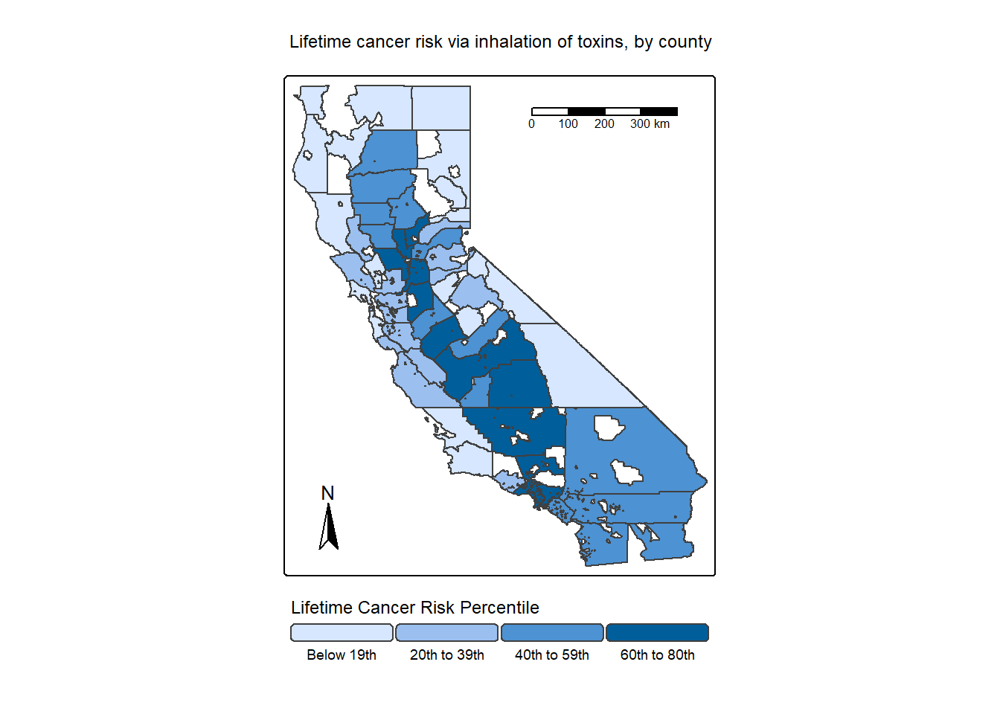
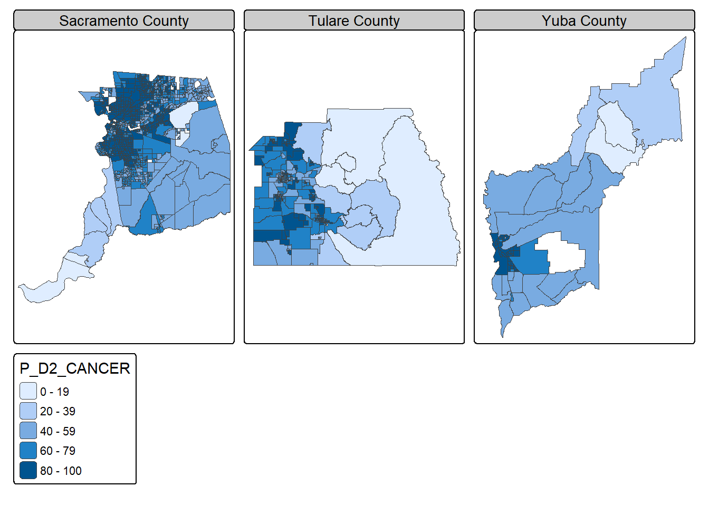

Reading layer `EJSCREEN_StatePctiles_with_AS_CNMI_GU_VI' from data source
`C:\Users\dixit\Documents\MEDS\EDS-223\eds223-homework1\data\data\ejscreen\EJSCREEN_2023_BG_StatePct_with_AS_CNMI_GU_VI.gdb'
using driver `OpenFileGDB'
Simple feature collection with 243021 features and 223 fields
Geometry type: MULTIPOLYGON
Dimension: XY
Bounding box: xmin: -19951910 ymin: -1617130 xmax: 16259830 ymax: 11554350
Projected CRS: WGS 84 / Pseudo-MercatorEDS223 - Homework #1 Leela Dixit
Exploring Environmental (in)justice
The United States Environmental Protection Agency defines Environmental Justice as “the just treatment and meaningful involvement of all people, regardless of income, race, color, national origin, Tribal affiliation, or disability”. In this project, I will be exploring particulate pollution in California and exploring which groups might be disproportionately affected by poor air quality.
Step 1: Load in necessary packages.
Step 2: Read in environmental justice data and clean for mapping.
Step 3: Map 1
The map below represents the estimated lifetime inhalation cancer risk as a result of carcinogens present in the air. This value is persons per million over a 70-year lifetime. EJScreen presents these data as a percentile for better comparison. Each inset map is one of the top three highest counties for lifetime inhalation cancer risk.

This map shows that counties of the central valley (San Joaquin Valley) are generally in a higher percentile for cancer risk via inhalation of airborne toxins. There could be a few potential causes of increased carcinogens in outside air:
- Nearby I-5 and Highway 99 introduce pollution sources, such as diesel locomotives.
- Vehicle emissions from these roadways, tractors and irrigation pumps from local agriculture, and wood burning stoves/fireplaces all contribute to fine particulate matter (PM2.5).
- Topography from surrounding mountains create a “bowl”, trapping these pollutants.
Source: EPA Activities for Cleaner Air
Step 4: Maps 2 and 3
We will zoom in to a few counties to get a more detailed view of any patterns that might emerge between airborne toxics and underrepresented communities.
Simple feature collection with 58 features and 2 fields
Geometry type: GEOMETRY
Dimension: XY
Bounding box: xmin: -13850030 ymin: 3833654 xmax: -12705030 ymax: 5162404
Projected CRS: WGS 84 / Pseudo-Mercator
First 10 features:
county P_D2_CANCER geometry
1 Sacramento 76.75460 POLYGON ((-13564605 4589722...
2 Tulare 71.33553 POLYGON ((-13306892 4275757...
3 Yuba 71.07692 POLYGON ((-13534880 4721170...
4 Sutter 70.10769 POLYGON ((-13562946 4715425...
5 Fresno 68.10859 POLYGON ((-13353768 4335840...
6 Los 67.49960 MULTIPOLYGON (((-13224706 4...
7 Merced 63.21250 POLYGON ((-13496841 4443564...
8 Yolo 62.00000 POLYGON ((-13575995 4653851...
9 San 61.03006 POLYGON ((-13531649 4528069...
10 Kern 60.82276 POLYGON ((-13299733 4156356...We will first take a look closer into the three counties with the highest inhalation cancer risk. In order: - Sacramento County - Tulare County - Yuba County

From these maps, we can see that there is a co-occurrence of inhalation cancer risk and high percentile of people of color that live in those areas. We can also see that there are not many areas in these counties where there is a high number of people of color and NOT a high inhalation cancer risk, meaning areas with low inhalation cancer risk are most often populated by white residents. This poses an environmental justice issue of people of color being disproportionately exposed to levels of airborne toxins that lead to higher cancer risk through inhalation. Further exploration into other population metrics, such as income level or factors that lead to healthcare accessibility, would be important to look into to get a bigger picture of patterns that could be occurring.
Lastly, we will look closer into just Sacramento County, the county with the highest inhalation cancer risk. We will look at further risk factors such as PM2.5 and diesel particulates, both of which contribute to inhalation risks, along with more environmental justice metrics (low life expectancy and low income).

We can see the additional air quality metrics (diesel airborne particulate matter and PM2.5) both congregate in high percentiles in similar locations as lifetime inhalation cancer risk. This makes sense, as both additional air quality metrics likely contribute to overall inhalation cancer risks. We can see our environmental justice metrics we are looking at, percentiles of people of color, low life expectancy, and low income, are also highest in similar locations as our air quality metrics. This further shows that disadvantaged groups could be experiencing higher health risks due to their locations, potentially more difficult time receiving medical care because of income status, and possibly contributing to a lower life expectancy.
Step 5: Future directions
Exploring causal relationships between these metrics and looking into additional metrics (both environmental justice focused and other air quality or environmental metrics) could help tease apart the potential pattern we see here, and lead to more effective policy and research in line with creating just environmental solutions for those underrepresented in California.